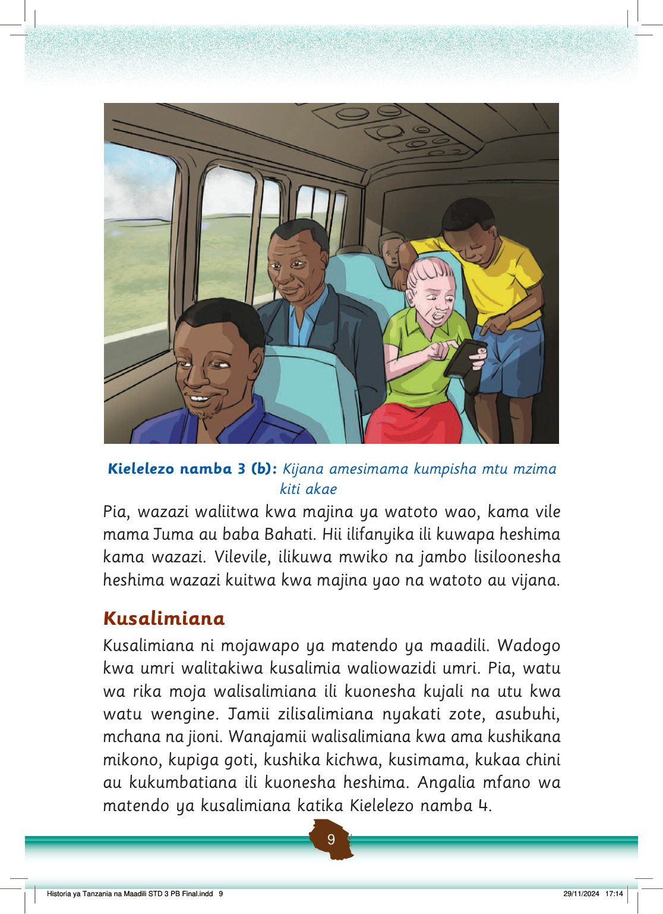

Wanafunzi wamesimama darasani kumlaki mwalimu anapoingia. Hii ni heshima kwa mwalimu.
Wanafunzi wawili wanasalimiana kwa kupeana mkono. Wanaonyesha urafiki na adabu.
Mtoto anainama akimsalimia mtu mzima kwa heshima. Wote wanaonyesha adabu njema.
Kielelezo namba 4: Vitendo vya maadili katika kusalimiana
Tofauti katika matendo ya kusalimiana hutegemea tamaduni za jamii husika.
Mtoto alipaswa ama kusimama au kupiga goti anaposalimia watu waliomzidi umri.
Kitendo cha kijana kukaa wakati anamsalimia mtu mzima si kitendo cha kimaadili ya Kitanzania.